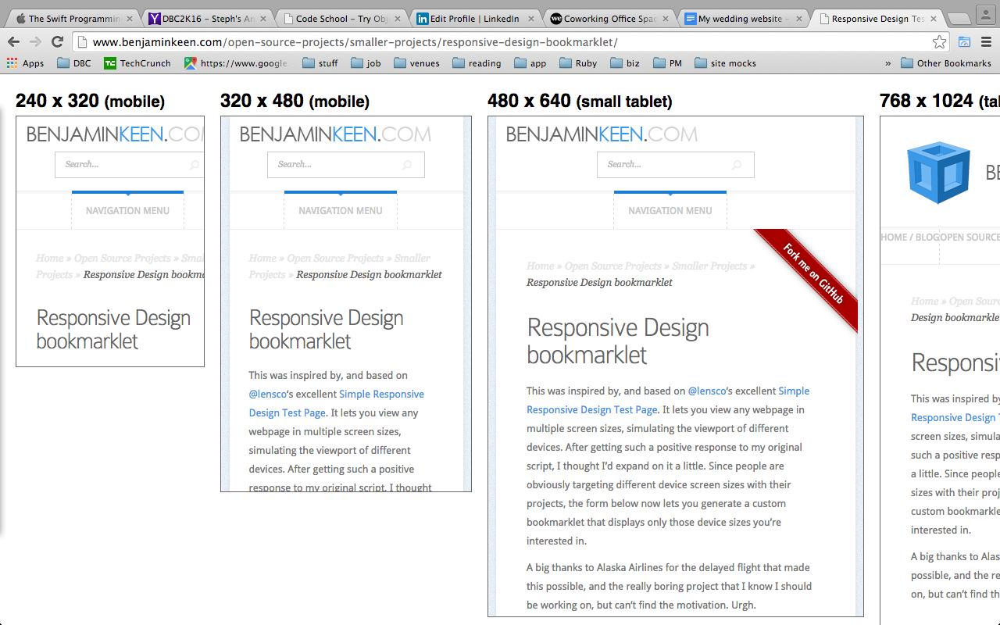

Current product manager living in the agile world. Love practicing my coding while honing new skills. All about realizing problems and solving them via creation or improvement of products. Social justice advocate and one love for our race...the human race. #Foodie #Sportsaholic
Blog
The following blogs express some views I have gathered from my opinions and research. Writing definitely provides an outlet for reinforcing what I have learned and also self expression. My writing much in a way reflects me but I am more than just words ... aren't we all, so feel free to reach out if need be.
My Responsive Website Sleeper Tips
11/16/16 By Clifton Thomas
Although there’s a lot of excitement and indecision surrounding wedding planning, one thing for sure I looked forward to was actually building my own wedding website. I didn’t build a website for a while and it was a great excuse to build my own single page site and shine up those HTML5 and CSS3 skills. Today i’ll just share some insight on some tips one should consider moving forward with responsive designs. Now there’s surely more tips than what i’ll mention but I am just focusing on things that helped me in my process. Control the Viewport:
The viewport is a user’s visible area of a web page. Thus, it will change depending on the device someone uses to accesses your website. For instance a mobile device has a smaller viewport than a desktop. The problem with this and your website, is that your site has to be able to adjust to these different view ports to be viewed properly; thereby leaving browsers to scale down sites to fit respective viewports. This can cause some proportions issues on your site and diminished user experience.
Considering these inconsistencies HTML5 came to the rescue with the meta tag that allows us to control the viewport. Just insert in the head of your HTML5 document the following :
meta name="viewport" content="width=device-width, initial-scale=1.0"
The meta “viewport” element gives the browser instructions on how to control the page’s scale and dimension.
The “width=device-width” sets the width of the page to adjust to the width of the screen of the device (whether mobile or desktop).
The “initial-scale=1.0” sets the zoom level of the page once it renders by the browser, on the respective device’s screen. Responsive Across Different Screens:
Considering the mobile device business is spawning all sorts of different sized devices, one has to consider what will be your respective users’ experience across all these different screens. So as to help with this process I came across a great bookmarklet that you can place in your browser’s bar and with just a click you can see what your site looks like on the various types of screens. Whether it’s a tablet, phablet, laptop or laptoplet (soon to hit stores lol) you can test your site’s responsiveness and usability experience. There is even an option to add custom screen sizes. Because clearly manufacturers will be playing with screen sizes for a while to come. So check out the following link and give the bookmarklet a try:
Below is a screenshot of what your page will look like once you click the bookmarklet:

Fig.1 Screenshot of Bookmarklet in Action
Now I can see people cringing thinking “What about media queries and mobile first designing, etc.” Well these are my sleeper tips. I found out about these during my last build and wanted to share them and maybe they can help someone who may be on the lookout. Stay safe all and happy coding!
Asking the Right Questions
10/26/14 By Clifton Thomas
Now being a code newbie comes with many new things you have to learn; and being at a bootcamp where the info is coming fast and heavy you have to make sure you are efficient. One of the tools of being efficient is asking/writing the right questions. After all you need the right answers to progress and keep the ball rolling.
For the situation where one is writing the question you have to start off with a good title. This entails using error messages, key APIs or unusual circumstances that make your question different and stand out. Make sure your spelling and grammar are spot on also. The last thing you want is for someone to ignore your question because of lack of comprehension or confusion. You may even get an answer that’s not relative, so have another set of eyes look over your question if necessary. Also if you can’t seem to come up with a title just leave it for after you write out your details of what’s bugging you then summarize it.
Next thing is the body of the question. Don’t just chug some code down people’s throat and expect them to decipher what’s the problem. Be engaging and explain what led you to encounter the problem and other difficulties. Be sure that the code you do give is specifically relative and allow others to even replicate the problem so they can get a gist of what’s going wrong.
When using forums or groups to ask questions try to include a tag for the language, library, and specific API your question relates to. If you start typing in the tags field, the system will suggest tags that match what you've typed - be sure and read the descriptions given for them to make sure they're relevant to the question you're asking! Unnecessary tags just clutter things for people later on who may have your same problem or another problem so be considerate.
Once again proof read! Make sure the question makes sense and your grammar is spot on and as we mentioned before having another pair of eyes viewing it is recommended.
Once you post your question give feedback, whether it’s clarification you need or thanks you need to dish out. Be active and show your appreciation for the community and or individual that gives you feedback.All in all these tips are useful in both written and verbal questioning. Just take the tips in mind that are relative to your situation. Be short yet informative, and be kind and appreciative.
What is Rails?
10/19/14 By Clifton Thomas
Yes I am learning Ruby and I love it and all it’s lovely methods that make life easier but what’s this Rails thing I always see and hear about. I know it’s something I should probably know but maybe I don’t know enough to need to know what it is…
Those have been some of my thoughts but tonight I was determined to at least have a basic grasp of what Rails or Ruby On Rails is. So after surfing the net and reading several articles the one by Mr. Daniel Kehoe really stood out as a simplified account of what Rails is and it allowed me to formulate the following.
As we know thanks to Yukihiro “Matz” Matsumoto we’ve been blessed with the Ruby programming language. So how does Rails or Ruby on Rails fit in this picture. For starters, it was originally coined “Ruby on Rails” by it’s credited creator David Heinemeier Hansson, but now it tends to go by Rails depending on the weather or personal preference I guess. Rails is a software library that is added to the Ruby programming language and extends it. Technically, it is a package library (specifically, a RubyGem), that is installed using the operating system command-line interface.
Rails serves as a framework for building websites. As such, Rails establishes conventions for easier collaboration and maintenance. These conventions are codified as the Rails API (the application programming interface, or directives that control the code). Learning Rails means learning how to use the Rails conventions and its API.
Rails combines the Ruby programming language with HTML, CSS, and JavaScript to create a web application that runs on a web server. Because it runs on a web server, Rails is considered a server-side, or “back end,” web application development platform (the web browser is the “front end”). Rails, in a larger sense, is more than a software library and an API. It is the central project of a vast community that produces software libraries that simplify the task of building complex websites. Members of the Rails community share many core values, often use the same tools, and support each other with an informal network that is built on volunteerism. Rails is popular among web startups, significantly because the pool of open source software libraries (RubyGems, or “gems”) makes it possible to build complex sites quickly.
Ok so we have an idea of what Rails is, but what does it do? Web browsers combines three kinds of files—HTML, CSS, and JavaScript—to display web pages. A browser obtains the files from a web server. Web servers deliver HTML, CSS, and JavaScript, either from static files that are stored on the server, or from an “application server” that creates files dynamically using a programming language such as Ruby. A software program written in Ruby and organized using Rails conventions is a “web application.” Rails combines the Ruby programming language with HTML, CSS, and JavaScript to create a web application. Rails uses Ruby to dynamically assemble HTML, CSS, and JavaScript files from component files (often adding content from a database).
Why create a web application? A web browser needs only a single HTML file to display a web page (CSS and JavaScript files are optional). However, if you are creating several web pages, you might want to assemble the HTML file from smaller components. For example, you might make a small file that will be included on every page to make a footer (Rails calls these “partials”). Consider another example: If you are displaying content from a database, you might not want the complex programming code that accesses the database mixed into your HTML (programmers call this separation of concerns and it makes for more modular, maintainable programs). Finally, if you are using a web application server such as the one supplied with Rails, you can add features to your website that have been developed and tested by other people so you don’t have to build everything yourself. These are all reasons to create a web application.
Thus Ruby on Rails make the development of web applications easier. So we now have a better idea of what the fuss seems to be about…efficiency and convenience. This is just a basic overview and Rails has much more to it but I hope this post has shed some light where there was curiosity.
Blogging to Learn & Reflect
10/26/14 By Clifton Thomas
I wanted to improve my site that is documenting my journey to code so I decided to send the site’s link out to a few reliable friends for some feedback. I must say I was a bit apprehensive at first because I already had some improvements in mind but I thought it’s always better to have some more eyes viewing your work to get different perspectives.
Upon getting the feedback I was really pleased with the detail of how I can improve the site and of the good things I’ve already done. I sifted through the recommendations and decided to implement some that I can in a timely manner. It should be noted there was some suggestions that I will implement but not at this time due to the time required. I’m trying to maintain some time-boxing for efficiency sake.
From the suggestions I got I decided to make the following changes:
- improve the images for the social media nav bar
- Improved the header
- adjusted the margins of certain elements
- cleaned up the code for the CSS
Now I had a much longer list but once I got started I noticed so many more code improvements can be made. For instance, with my nav bar I realized that I needed it to be floated and also width and margin adjustments needed to be made to accommodate the other respective changes. This was a common theme. As I made one adjustment I had to readjust many other elements to make sure the site looked balanced. As I made the header position fixed I needed to adjust the positioning of the other elements such as the nav bar and social media bar and the div that contains the image and the current info.
As I made the respective changes though I not only reinforced some concepts I learned but I noticed a difference in the appearance of the site. The process of attaining feedback surely helped and made me even more motivated to fix certain elements because now I can’t wait for my friends to view the site again and share their thoughts once more…and the feedback and pushing code loop will continue.
Dealing With Conflict
10/19/14 By Clifton Thomas
Discuss a time you had an emotional conflict with someone. What was it about? What happened?
I don’t get into 2 way conflicts anymore. I have learned to deal with my emtotional control a lot. Thank you yoga and meditation. So I had to reach back in my memory (waaaaaay back) for this one. My friends and I were being cursed at by some individuals because they thought we were speaking about them in a negative way. Although I ignored them at first the person kept pressing the issue and began to send racial and ethnic slurs my way. Thus a friend and I decided to confront them to find out what was the problem. The war of words continued and one of the individuals raised their hand to me and a friend when we approached ... long story short, the individual decided to file a police report because “he was attacked for no reason”.
What was the source of the conflict?
The individual felt offended by something they thought they heard. From my perspective I didn’t appreciate the racial and ethnic slurs and the threats of physical harm.
How did you handle that conflict?
I approached the person with my hands behind my back and spoke to him in a respectable manner but when my friend and I was threatened with bodily harm we defended ourselves.
Did your actions make the conflict better or worse?
Our actions made things worst. Starting from confronting the individual to acting to defend ourselves.
If you could go back, what would you do differently, if anything?
I won’t do anything different. That situation has changed me a lot in terms of how I deal with people and I have developed a greater sense of control of my emotions and reading of situations.
What did you learn from this experience?
I learned that some people love to start stuff and when they come out on the bad end of the deal they do what they can to make your life miserable. People are at times selfish and self gain is a priority. You have to always analyze situations and think of the consequences and make the best decision for you and your future, because when it comes down to it, don't let an idiot control your path in life. Be in control always.
SQL Injection
10/12/14 By Clifton Thomas
After learning the basics of SQL I was most fascinated by SQL Injections and decided to expand on it based on the research I did to understand it better. I must credit (mostly) veracode.com and w3school.com for the insight and literature they provided towards my comprehension in this topic.
SQL Injection is a type of web application security vulnerability in which an attacker is able to submit a database SQL command which is executed by a web application, exposing the back-end database. A web application that utilizes user-supplied data without proper validation or encoding as part of a command or query are typically vulnerable to attack. The malicious user inputs specially crafted user data that tricks the application into executing unintended commands or changing data. SQL Injection allows an attacker to create, read, update, alter, or delete data stored in the back-end database. Most commonly SQL Injection attacks gives access to sensitive information such as social security numbers, credit card number or other financial data.
SQL Injection Preventions:
- Adopt an input validation technique that authenticates against a set of defined rules for length, type, and syntax and also against business rules.
- Ensure that users with the permission to access the database have the least privileges, i.e. do not use system administrator accounts like “sa” for Web applications. Also, you should always make sure that a database user is created only for a specific application and this user is not able to access other applications.
- Use strongly typed parameterized query APIs with placeholder substitution markers, even when calling stored procedures.
- Show care when using stored procedures since they are generally safe from injection. However, be careful as they can be injectable (such as via the use of exec() or concatenating arguments within the stored procedure).
Affirmations & Values
10/12/14 By Clifton Thomas
When you think of the times in your life where you’ve been the happiest, the proudest, or the most satisfied, which values come to mind?
Accomplishment
Activism
Affection
Close relationships
Control
Growth
Honesty
Integrity
Loyalty
Honesty about who I am, what I know and what I stand for are important traits that I hold dear to my heart. This has molded me to become more at ease with how I live and my views of life.
Control is an aspect of myself I have worked on and am proud to say it’s a great asset I have. To be able to control my emotions and thought processes has led to many moments of enlightenment and understanding that I value and appreciate as part of my growth. In general, I try to live up to these values: Disagree 1 ----- 2 ----- 3 ----- 4 ----- 5 Agree
Accomplishment 5
Activism 5
Affection 5
Close relationships 5
Control 5
Growth 5
Honesty 5
Integrity 5
Loyalty 5
What was the last topic that someone asked for your advice on? Does it relate to your values? I recently advised a friend about depression. He has been going through a lot and didn’t know how to approach things. After we spoke for a while we got to realize he needed to be more honest with himself. Be honest about his emotions, his lifestyle and relationships. He wasn’t being realistic about his situation and the things he needed to do to make improvements in his life. Though it’s easier said than done, he confirmed that he needs to make the adjustment and will work towards it. Values can be a powerful way to negate stereotype threat if you can bring them to mind when you are under a threat. For this part, consider:
How do you feel when you think about your values?
I feel proud and responsible for the fact that not only I have accomplished a lot but I have a responsibility to maintain my standard and beyond to set a good example for others to learn from and even follow.
Do you think it can help you mediate stereotype threat if you recognize you feel it?
Yes once I recognize stereotype threat I exercise control and integrity in my actions to show that such judgements don’t phase or dictate how I move on in life. Reacting positive in light of negativity is something I try to always do because this takes great strength and brings a sense of accomplishment and confidence in yourself.
Can you think of any mental or physical exercises you can use to help you when you are feeling down (for whatever reason) at DBC?
I love to go to the gym to get my mind settled and regain focus. For me it’s a time to become one with myself and my goals and block out all negative energy that can engulf my mind. I leave the gym reenergized and ready for the next step forward.
Ruby Class Methods
10/05/14 By Clifton Thomas
After perusing the web for a solid definition and explanation on Class Methods I came across class methods while reading the highly regarded text “The Well Grounded Rubyist” by David A. Black . I must say I’m getting fond of this text in making my Ruby notes and would like to share some of it’s take on Class Methods. Class methods are single methods which are defined on a class object. The idea of a class method is that you send a message to the object that’s the class rather than to one of the class’s instances. Let’s say I create a class called Tickets and wanted to create a class method of that class I’ll simply write:
class Ticket
def Ticket.most_expensive(*tickets)
tickets.max_by(&:price)
end
end
“Ticket.most_expensive” represents the defined class method that we can access through the class object Ticket but not through its instances. Individual instances of the class Ticket don’t have this method. We can also use the notation “self.most_expensive” for the class method, with self replacing the class’ name.
Class methods enable the execution of certain operations pertaining to a class that can’t be performed by individual instances of that class. The “.new” method is an excellent example. “Ticket.new” is called because, until we’ve created an individual ticket (instance of Ticket class), we can’t send it any messages! The class therefore needs to make the instances therefore we define a method with the class Ticket. A class object (like Ticket ) has its own methods, its own state, and its own identity. It doesn’t share these things with instances of itself.
Cultural Stereotype Threat
10/05/14 By Clifton Thomas
By: Clifton ---> Published: Stereotype threat refers to being at risk of confirming, as self-characteristic, a negative stereotype about one's group. Who knew there was science for this stuff? I must say it made for interesting reading though. I have been on the end of a plethora of stereotypes. Considering I’m from a foreign country this was something I expected but I didn’t really expect the vast creativity of ignorant people when it came to looking at an individual and making up stereotypes. I’ve heard it all from nerd to jock to partier to failure and even terrorist. I guess the fact that it’s such an unusually wide spectrum of stereotypes I tend to just laugh it all off and just put it down to people just not being sensible. Maybe if there were just a few particular stereotypes I was labelled with I would be more self conscious about it and maybe even adapt to such standards but thankfully the haters or confused individuals (as I tend to call them) have not won any battles with me.
I am someone who was made aware before entering a new culture how I’ll be perceived and why so. Thus I kind of had a head start on the whole thing and was understanding of peoples expectations. In college I wasn’t expected to be an athlete because I looked Indian to some folk and from what I gather from the critics, indians aren’t athletic. I wasn’t expected to be on the Student Government board because I had an accent and some people thought that would hinder my ability to communicate. I won all my elections and became the first student to win 3 years running. When people realized I was from the Caribbean I was just expected to just be a party animal that drinks alcohol…well I am not a drinker but I do love a great party lol So I’ll give them that win lol.
Outside of school I’ve had my fair share of moments encountering stereotypes also. On the subway people tend to not sit next to me and I’ve been called terrorist numerous times while minding my own business walking casually. This is not just something common everyday people will classify me as because my visits to the airport are always and adventure. I usually ignore people and just go about my day because it’s more funny that hurtful to me. I am not one to be angered by such folly as stereotypes. I will advise anyone to not be vexed by it but understand more as to why it exists within the person and try help them understand you cause I believe with understanding there’s knowledge and thus perspective can be gained. Bearing in mind though that not everyone is a willing listener just be yourself and know that you are an individual that can make your own path.
In general I understand that not everyone has the knowledge to know about diversity in the world. I get it that in a world where things are very visual that we judge each other visually too and we make judgments based on visual keys. It’s how the mind works. Just like if you grow up seeing fire burning stuff you know when you see a fire that it’s dangerous. People though are supposed to be advanced enough though to know that individuals can’t be generalized into groups based on some or even the majority’s behavior. We are all individuals and have different life experiences and can choose our behaviors. I know some people follow the crowd and thus stereotypes can exist but as humans we should judge more with our mind and heart than with our eyes. Give people a chance to make there own mark of who they are and don’t make it for them.
Ruby's A Class Act: Class Basics
09/28/14 By Clifton Thomas
An object oriented program like Ruby involves classes and objects. Classes are the backbone of object oriented programming and they define objects and say what objects are and what they can do. It's basically a blueprint from which instances are created. For instance, one can define a
Pets class with dogs, cats, fishes, etc as instances and you can then add characteristics (name, age) and behavior (sound, tricks) by defining variables, methods and more within the class. Below we have a TipCalculator class which calculates tips for your bill depending on the service you received.
We first define the class using the 'class' keyword followed by the name (in CamelCase --> wiki this if it draws a blank) then you add your instance variables, methods etc in the 'body' then the class is ended by keyword 'end'. For example:
class TipCalculator
def some_method
end
end
Now that we see how to initially define a class I can introduce you into how we can make an instance of the class. We do this using the syntax: “variable_name = ClassName.new”. In my code above we made the instance “dinner_bill = TipCalculator.new”. Why make an instance you say? Well in our class we have a set of instance methods and instance variables which cater to performing tasks. In our case the task is calculating a tip based on how good the service you received was. By creating an instance (done outside the class) you are able to access the use of the class’ code for your respective meal’s bill. Sounds cool right, but how that works?
In our class you see the ‘initialize’ method. This method is run on every new instance created. In our case it carries an argument ‘cost’, thus every time you create a new instance you have to include a value/cost. For example dinner_bill = TipCalculator.new(45). So here we created a new instance and added a cost $45 for the tip to be calculated.
As you read further down our above you will notice the “@cost” variable. This is an instance variable which means it’s available to all the instance methods in the class and can change from object to object. In our case it will change every time you change the “cost” of your bill.
Next we can look at the other methods in our code. They are called instance methods and they are available to all created instances of the class. Thus if we create an instance “brunch_bill = TipCalculator.new(12)” we can use the method “great_service” on this instance. For example:
“brunch_bill.great_service”. Calling this method on the instance will result on the tip calculation based on the “great_service” method code block.
As you can see the class provides a way to organize code that can then be used on instances of that class. Thus allowing us to use that set of code on various instances we create for the benefit of calculating tips on different bills. This is just a basic example of the power of classes and it can surely be used for more complicated processes but this should get your feet wet and even wet your appetite so maybe now you are hungry for more on Ruby’s classes. So get out there and get exploring.
Pairing and Caring
09/28/14 By Clifton Thomas
Pairing has been a breath of fresh air. I am a pretty social person but the fact that one has to actually work on a challenge made me feel a bit apprehensive at first. I guess I just didn’t want to pair on a challenge and be stuck on a problem or not be able to contribute enough to the challenge. So at first I tried to get my prep in be well versed in the material then pair on a challenge. I was then thoroughly able to assist and contribute to the challenge. I felt good and was motivated to keep up the process. There was an instance though where I paired on a challenge I didn’t fully prepare for. I was nervous and even thought about canceling the appointment. I went into the session less energetic anticipating that I will be seen as incompetent by my pair and I felt that I was cheating the individual by being unprepared. It just so happened I was able to contribute and learned so much form my pair. This gave me new insight on the pairing process. It’s not about showing what you know or being the master of your craft. There will be times in one’s career where you will go into a pairing session and you won’t have a full grasp of the material. It’s important to make sure and go in with a free spirit knowing that even if you don’t know everything to help at that point in time, you and your pair can work together to attain that common goal and thus you both learn more and gain a level of trust and camaraderie. To me that’s been the main take form these sessions. Meeting great people, working on challenges together with the knowledge you have and learning together.
I was so excited to read my feedback just to see how my views were received. I got good reviews on the specific and kind aspects of my reviews but I was deemed to not be fully forthcoming with the actionable feedback. I smiled because I knew to myself it was true, and although I knew while I was writing my feedback that I should include the actionable aspects, I held back out of concern that I maybe too critical. After thinking about it though I realized I was just not only cheating myself out of honesty I was also cheating that person I paired and connected with. In this environment it’s all about making each other better and I can’t be selfish and short change my pair. From then on I made it my duty to point out all and any actionable traits my respective pairs should improve on or continue with. I have even seen a change in how my feedback is reviewed and it makes me feel fulfilled to know I held up my end of the bargain of making each other better.
Yes I have officially drank the juice! Pairing and feedback works and helps those involved and after all isn’t that what working together should be all about; and who better than your fellow aspiring developers to help and grow with you.
Groupies: The *.group_by* Method
09/22/14 By Clifton Thomas
This week I did a lot of work on reading up on Enumerable methods (i.e. a module or just a bunch of methods packaged together). Whether it’s discovering new ones or just gaining insight on the ones I currently know it was all enlightening. One of the methods that has stuck with me is the “.group_by” method.
This method returns a hash, which is a unique collection of keys and values. Here’s the hash syntax, hash_name = {key => value}. Thus the ".group_by" method groups the collection based on the result of the block. Where the keys are the evaluated result from the block and the values are the arrays of elements that correspond to the key.
Examples:
In the range of numbers from 1 to 4 we are calling the the goup_by method. The method iterates over the numbers and passes each to the block. The block then takes each number (num) and multiplies it by 3 and returns the value into the hash. Remember the results of the block is the hash’s keys and the elements of the range that give that product (when * 3) are the values.
Here’s another example where you can see the method used in a more applicable scenario:
Basically in the range from 1 to 10 we are grouping the numbers based on if they are even (divisible by 2) or odd.
There you go folks. Whether you can use this in one of your coding exercises or just use this post to facilitate some enlightenment, I encourage you to keep exploring the wide variety of methods out there waiting to be discovered by you. Until next time, happy coding all!
Tech's Men From Mars Women from Venus Problem
09/22/14 By Clifton Thomas
I must say this was the most depressing assignment to date. I thought I’ll try to find a unique problem facing the tech industry and expand on it and try not to be cliche about what I write etc. Well sorry folks no originality here. It seems for all the big data and implementation articles I found they were increasingly outnumbered by the social injustices that are infecting the industry. Which ones you say? Well I must say almost no stone has been left unturned, from kids to women to even the environment. Yes I know the usual suspects of the who’s who when it comes to how we can better our society. But that’s just my point. For all the problem it seems that we as humans are accomplishing in tech it seems like the light is not shining bright enough in certain sectors.
Now I don’t believe the tech industry is at fault, because some of these problems are pervasive throughout society and has just meshed into the tech landscape. Lets for the interest of brevity look at the strife faced by women in the tech world. Now I’m not going to give you the hundreds of statistics and personal stories I’ve read, but I’m just going to speak from my immediate concern after digesting all the aforementioned material. This sucks!! For an industry I laud for being great on the quality of life and treatment of their employees, why are women treated as outcasts. Whether it’s looking for VC funding, expressing opinions or receiving suggestive comments it seems that the industry is failing women badly.
I personally believe in a diverse working environment and will always believe that qualified women should reap the fruits of their labor like any other person. In general I believe the unfair treatment can be attributed to many things but in particular the mental approach people have towards women is something we can adjust. A lot of these things are ingrained in a society and it’s people from since birth. Now not everyone will shape their opinions and actions the same way but I believe the majority of people have succumbed to what’s commercialized as what a woman is and stands for.
Forward thinking is what can help this situation and no we can’t stop how society depicts sexes (then world peace may be possible), but I believe the more everyone gets involved in learning about not only the plight of women in the industry but what they are doing to progress we can all gain better appreciation and realization for the cause. Sharing in ones struggle and progression gives you a better perspective and these are the kinds of things that can change minds. A changed mind can change one’s actions and habits; thus allowing people to influence others to change. Yea I know that sounds like a slow process but it’s the route I chose to understand more and the route I choose to help others walk. So let’s be human again and solve this tech problem starting with you, cause you know it’s right.
JavaScript: The Popularity, The Ups & The Downs
09/14/14 By Clifton Thomas
Ever since JavaScript’s introduction in 1995, as a way to add programs to web pages on Netscape Navigator browser, the language has climbed into adoption by all major graphical web browsers. It has made the current generation of web applications possible—browser-based email clients, maps, and social networks—and is also used in more traditional sites to provide various forms of interactivity and cleverness.
Javascript is surely having it’s say on why it’s so popular in web development and here are some more points:
Easy to learn:
JavaScript is easy to pick up because of the very flexible nature of the language, is widely standardized across common browsers and is far more useful than ever before! Because JavaScript is not a compiled language, things like memory management are not a big concern. You won’t find yourself having to worry about loading and unloading content, compiling, or setting primitive data types because most of the heavy lifting is handled by the browser.
Easy to edit:
JavaScript is a scripting programming language so the code you write does not need to be compiled and as such does not require a compiler or any other expensive software to write. That’s right, JavaScript is just plain text, so all you need to write it is notepad or any other plain text editor.
It’s a Prototyping Language:
objects can be defined and developed on the fly to suit a particular use, rather than having to build out specific classes to handle a specific need. This opens the door for very rapid and flexible development as well as a wide array of possible design patterns that would not be possible in more structured languages.
Node.js:
Node.js is built on Google Chrome’s JavaScript Runtime engine called V8. What this means is that while a normal server side language has to process everything sequentially, JavaScript does not have that limitation. It can start task A, move on to task B, processing both (or as many instances as needed) at once. This makes the ability of a server to serve up web pages unimaginably more powerful and makes things like DOS (Denial of Service) attacks a thing of the past (in theory).
Now that we have explored some of the many upsides of JavaScript let’s look at some of the limitations one may encounter. Péter Halácsy (co-founder and CTO of Prez) hit the nail on the head with his article on JavaScript. He stated that JavaScript is caught in an iron triangle of its own making. We’ve all grown accustomed to the flexibility and freedom it offers, and we don’t want to give that up. At the same time, we want it to be blazing fast, and it turns out that when you reach millions of lines of JavaScript, maintaining such a flexible language becomes a problem. All three of these areas — flexibility, performance, and maintainability — are intertwined. When you make progress in one area, one of the other two, or even both, will suffer. This tells me that there is no one silver bullet that will solve these problems, but there may be many that do.
JavaScript isn’t going away anytime soon and there’s much being done (MLOC.js conference) to ensure the language not only improves on it’s faults but survives for the long haul.
My Thinking Style & Learning
09/14/14 By Clifton Thomas
I am usually not one to read much into generalizations cause I’m a strong believer in individuality and not being classified in a group. So when DBC asked me to take the Gregorc’s Mind Styles model to help me learn about my learning style, I wasn’t too thrilled but I figured if it can help me learn this mountain of material better then I’m game for it.
Based on the test, provided by the Gregorc’s Mind Styles model, I got the Abstract Sequential thinking style. I was a bit surprised, but I figured let me do some research into it. I found that Abstract Sequential thinkers are good at visualizing things, good at looking beyond and are logical thinkers. Now with this knowledge I realized I can actual adapt some of my study habits to enable me to respond better mentally to new and complicated material. Maybe I can watch some videos of concepts and draw things out step by step so I can rationalize them and retain info better. Just writing this my head is nodding because these are techniques that I knew from before that I always looked to when the tough got going.Maybe now I can take a more structured approach to these learning techniques and be more efficient in my study habits.
Thus far at DBC my most difficult challenge has been fully grasping JavaScipt and now I realized a lot of that is due to the fact that I never found good video and structured material on it while searching my external resources. To compensate for this I can start taking the notes given to me and make them more visual so I can use my preferred retention techniques to work for my benefit.
From my research I can confirm that the thinking styles and learning techniques can surely influence how I retain and understand material and these are things I knew before; but now my plan is to be more structured in what I do, so that my learning techniques are not done haphazardly. Providing structure may take up some time initially but in the long run I will benefit because efficiency will increase and if i have to revise my work things will be in place ready for me to take advantage of it.
The Difference Between Margin, Border and Padding?
By Clifton Thomas
While stylizing your beatutiful HTML code with CSS you will realize there comes a time when you need to shift things around for the sake of positioning and aesthetics. Now although CSS provides us with many positional elements to play with, today I'll give you a fundamental break down of some of the more commonly used properties "margin", "border" and "padding". When we create content on sites they are thought to be in a box. The content (a heading, paragraph, etc) is surrounded by a border (thus creating a box) and we can manipulate this box in relation to other content using the above terms in our CSS code.
Refer to the image above and imagine the word content refers to the words of a headline you input into your site. The margin refers to the space outside of the box (that has your content) and how far your box is in relation to other elements on the site. The larger the margin the further the box is from other elements and the smaller the margin the closer it gets.
Syntax:
"margin:auto:" to automatically put equal left and right spaces on the sides of the box.
"margin-top:","margin-right:", "margin-bottom:" or "margin-left:" to specify the direction you want the box to move by adding a value after the colon.
"margin:1px 2px 3px 4px" to set all sides a value at once (starting at the top and going clockwise).
The border is the edge of the box. Yes I know it's like any border, no tricks here. This CSS property allows you to specify the style, size and color of the border that has your content.
Syntax:
"border-styles:value;" with values like "none", "dotted", "dashed", "solid", etc
"border-width:value;" with values like "1px", "2px", etc
"border-color:value;" with values like "red", "#FFFFFF", etc
Padding refers to the spacing between the content (the heading, paragraph, etc) and the border of the box. Thus allowing you to manipulate how close or far you want your content to your border.
Syntax:
"padding-top:","padding-right:", "padding-bottom:" or "padding-left:" to specify the direction you want the content to move (in relation to the border) by adding a value after the colon.
"padding:1px 2px 3px 4px" to set all sides a value at once (starting at the top and going clockwise).
Now that was a basic reference to "margin", "border" and "padding", and there are some variations in syntax that one can come by but once you get these down pack then you'll be on your way to showing CSS who's the boss.